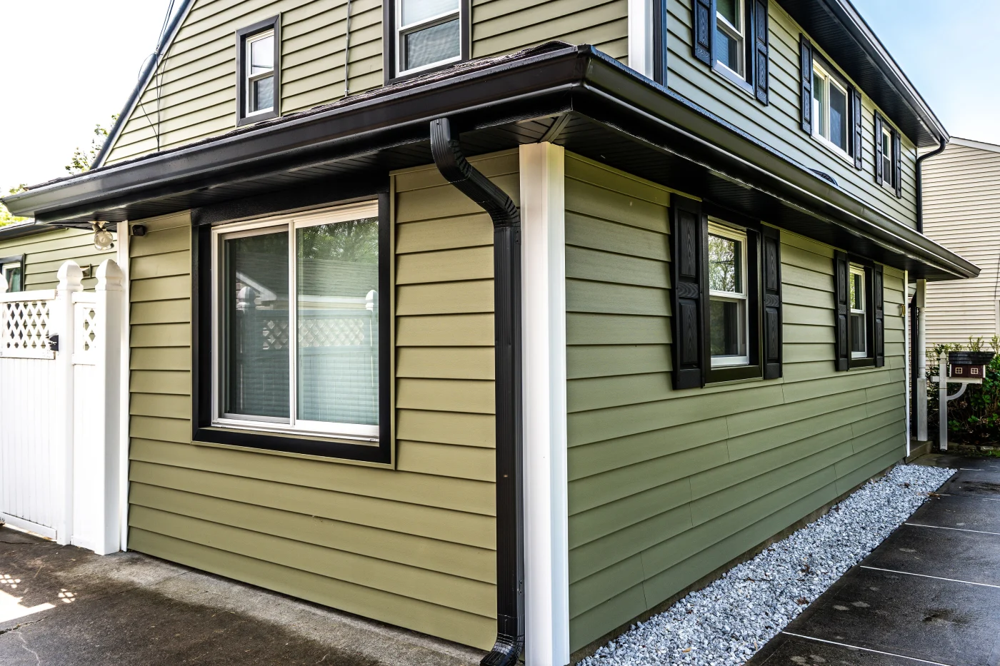

Roofs-N-More
Kemah, TX · Fully Insured
Houston's climate is brutal on siding — intense UV, extreme heat cycling, 90%+ humidity, hail, and high winds. We're a James Hardie Preferred Contractor and we'll help you pick what actually holds up here.

Friendswood, TX · Feb 2025Built-in foam backer, 40+ year life, 100+ colors. Fastest payback on energy savings — half the cost of Hardie and still looks sharp.
The gold standard for Gulf Coast homes. Non-combustible, rot-proof, won't feed termites. Holds paint 15+ years. Best resale value.
Real wood grain, zinc-borate treated against moisture and decay. Lighter and faster to install than Hardie.
We laser-measure every wall, note rotted trim, and send a fixed-price quote in 48 hours.
Old siding comes off. We inspect sheathing and framing, replace anything compromised, photograph everything.
New weather barrier (Tyvek CommercialWrap) and continuous insulation board installed over studs.
Hardie or vinyl goes up with manufacturer-spec fasteners. Window, door, and corner trim installed clean.
Primed and finish-painted (for Hardie/LP). You walk the job with Tommy before we pack up.
Houston siding runs $8–$16 per sq ft depending on material. A typical 2,200 sq ft two-story needs about 2,800 sq ft of siding once you subtract doors and windows.
Our customers typically see $80–$150/month in savings during peak summer with properly insulated siding. That works out to 80–88% ROI at resale — and it may qualify for federal tax credits too.
Most standard homes take 3–5 days. Larger or more complex projects run 5–7 days. We give you a day-by-day schedule in writing before we start so you know exactly what to expect.
We recommend fiber cement (James Hardie) for most Houston homes — it's non-combustible, rot-proof, and holds up to 90%+ humidity and hail. If budget is a bigger factor, insulated vinyl with a foam backer is an excellent runner-up.
Yes, we always recommend removing old siding so we can inspect the sheathing underneath. Installing over existing siding traps moisture and hides rot. We photograph everything we find before we fix it.
Get a free AI instant estimate in 90 seconds. No sales call required.